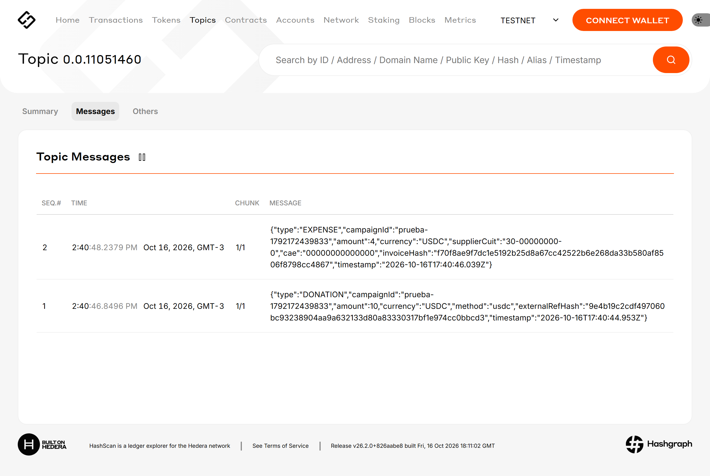
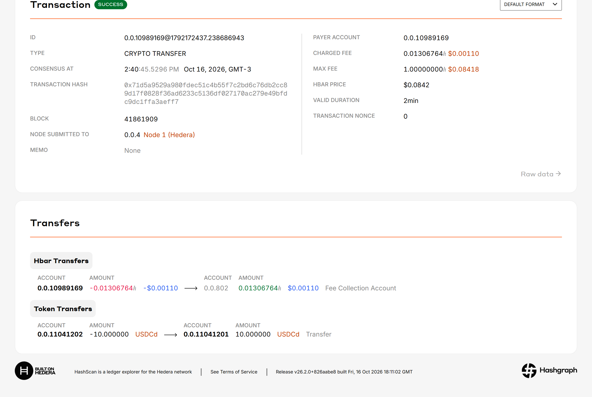

La capa de confianza para las donaciones de emergencia: cada aporte y cada gasto quedan registrados en Hedera, y cualquiera lo puede ver gratis.
Martín, Nicolás y Facundo · github.com/JonesMartin1/colectas-trazables

Registro real en testnet, hoy 14:40: una donación y un gasto en el topic 0.0.11051460.
Material para Henry Tong · 16/10/20261 / 12
El momento
El Niño ya está en Corrientes, y la provincia pidió esto con sus palabras
222
evacuados y autoevacuados al 15/10; el Paraná entró a la capital
100 %
probabilidad de que siga El Niño (SMN), fuerte a muy fuerte
30
municipios de alta vulnerabilidad que monitorea Defensa Civil
20–21/10
cuando se espera superar los niveles de evacuación
Mesa de emergencia, Casa de Gobierno, 6/10/2026 (Secretaría General, Seguridad, Desarrollo Social, Defensa Civil, Cáritas, Cruz Roja, UNNE y otros): "se establecerán mecanismos de transparencia y rendición de cuentas para las donaciones"
Fuentes: El Litoral, Infobae, Perfil, Confirmado (SMN), Corrientes Hoy. Detalle en docs/NEGOCIO.md y docs/ACTORES.md.
Colectas Trazables2 / 12
El problema
La solidaridad llega en horas. La prueba de adónde fue, nunca.
Millones de pesos juntados, por campaña
Una sola serie: monto recaudado y en cuánto tiempo.
0
rendiciones públicas consolidadas que encontramos de esas colectas
30 %
de los adultos donó a una organización en el último año; la desconfianza frena el resto (Cultura de Dar 2025)
Bahía Blanca 2025: circularon alias falsos casi iguales al oficial "bahiaxbahia".
Fuentes: Los Andes, La Capital MDP (Maratea, incendios de Corrientes 2022); Aire de Santa Fe (Gran Hermano, Bahía Blanca 2025); Chequeado; Economía Sustentable.
Colectas Trazables3 / 12
Lo que pasó este año · Venezuela, 24/6/2026
Sin un registro con fecha, ni la cifra oficial de víctimas se puede auditar
Muertos según el parte oficial, por fecha del parte
Doble terremoto de 7,2 y 7,5. Lo que documentó la prensa:
Donaciones que solo se podían entregar en la sede de un partido; insumos retenidos y salvoconductos.
Ayuda para La Guaira que terminó en Maturín, a 400 km, según una denuncia pública.
Estafas "solidarias" con campañas armadas con IA; hasta los directorios de "ayuda verificada" eran anónimos.
Un fondo cripto que prometió trazabilidad en la red y nunca publicó un reporte.
Fuentes: Wikipedia (Terremotos de Venezuela de 2026), Infobae, La Patilla, La República (FTC), CriptoNoticias. Detalle en docs/ANTECEDENTES.md.
Colectas Trazables4 / 12
Cómo funciona
La plata va directo a la organización. A Hedera va la prueba.
1 · El vecino verifica
Escribe el alias y lo ve en verde: oficial, firmado por Defensa Civil y Cáritas. Si es trucho, en rojo.
2 · Dona como siempre
Mercado Pago o transferencia. Opcional: USDC desde HashPack. Recibe un código de comprobante.
3 · Queda registrado
Topic HCS por colecta: DONATION y EXPENSE, solo con hashes. Sin clave de admin.
4 · Todos lo ven
Página pública desde el Mirror Node: recaudado, gastado (factura con CAE de ARCA) y saldo. Leer es gratis.
Lo que no hacemos: no custodiamos fondos (no somos procesador de pagos ni PSAV), no ponemos datos personales en la red, no emitimos token.
Lo que la red garantiza: orden y fecha de consenso, y que nadie cambió ni borró un registro, ni siquiera nosotros. La factura con CAE aporta la veracidad del gasto.
Colectas Trazables5 / 12
Uso de Hedera
El stack de tu charla, marcado con lo que usamos
Usuarios
IndividualsDonantes y organizadores
EnterprisesONG, fundaciones, RSE
GovernmentsDefensa Civil, municipios
Casos de uso
DeFi
RWA
ESG
AIroadmap
Identity
Digital Payments+ trazabilidad
Aceleradores
Stablecoin Studio
Guardian
Asset Tokenization
NFT Studio
SDKs@hashgraph/sdk (JS)
AI Studioagente auditor
Servicios
HCSTopic por colecta y registro de alias, con submitKey
HTSDonación en USDC directa al beneficiario
HSCSNo: un contrato que guarde fondos nos haría custodios
MirrorsPágina pública y verificación, sin costo
Red
Hashgraph consensusDLT, no blockchain: orden y fecha de consenso, finalidad en segundos (aBFT)
Amarillo: en la demo · punteado: próximo paso · blanco: no lo necesitamos, a propósito.
Colectas Trazables6 / 12
Evidencia en testnet
Ya corre: colecta, donación, gasto y lectura desde el Mirror Node

Donación de 10 USDCd, del donante 0.0.11041202 al beneficiario 0.0.11041201: SUCCESS, fee cobrado USD 0,0011.
Topic de la colecta: DONATION (con externalRefHash) y EXPENSE (CUIT, CAE e invoiceHash). Solo hashes, ningún dato personal.
Registro de colectas · 0.0.11051457Colecta de prueba · 0.0.11051460Token USDCd (HTS) · 0.0.11041203Plataforma · 0.0.10989169Beneficiario · 0.0.11041201Donante · 0.0.11041202
npm run probar: alta, donación, gasto y verificación del comprobante de punta a punta7 / 12
Costo
Auditar es gratis. Registrar una colecta entera cuesta centavos de dólar.
Costo de red por colecta, en USD, según la cantidad de donaciones
Crear el topic (≈ 0,01) más un mensaje HCS por donación (≈ 0,0008). Tarifas fijas de docs.hedera.com.
USD 0
leer desde el Mirror Node: la página pública, el Tribunal de Cuentas o la prensa no pagan nada
USD 0,0011
fee real que cobró la red por la donación en USDC de la demo (HashScan)
Colectas Trazables8 / 12
Antecedentes
Ya se intentó. Por eso lo diseñamos distinto.
Solución
Red pública
Muestra el gasto
Donante sin cripto
Reporte legible
Frena alias falsos
WFP Building Blocks
✗ privada
◐ interno
✓
✗
✗
Donaciones cripto a Ucrania, 2022
✓
✗
✗
◐ Dune
✗
Binance Charity (Turquía 2023, Venezuela 2026)
✗
✗
✗ usuarios
✗
✗
Fondo cripto UCAB, Venezuela 2026
◐ prometido
◐ prometido
✗
✗ sin reporte
✗
GiveTrack · Pulenta
✓
◐
✗
◐
✗
Colectas Trazables
✓ HCS
✓ CAE
✓ MP
✓ en pesos
◐ en curso
Evaluación nuestra, con fuentes en docs/ANTECEDENTES.md (UN Innovation Network, MIT Tech Review, estudio de Cheesman/Princeton, Bloomberg, Elliptic, CriptoNoticias). ✓ sí · ◐ parcial · ✗ no.
Colectas Trazables9 / 12
Participantes · sin token, con claves
Ninguna institución sola puede colar un alias: hacen falta 2 de 4 firmas
submitKey del topic de registro = KeyList con umbral 2 de 4. Organismos según la mesa del 6/10 y el gabinete provincial (docs/ACTORES.md); la participación de cada uno es propuesta, no acordada.
Colectas Trazables10 / 12
Modelo
En la emergencia es gratis. Se sostiene con la transparencia de todos los días.
Ingresos por año, en USD (escenarios, supuestos a validar)
ONG USD 40/mes · municipios USD 200/mes · provincia USD 1.500/mes · RSE 1,5 % · propina opcional. Línea punteada: equilibrio ≈ USD 65.000/año.
Primer paso concreto
17/10: pitch y demo en testnet.
18/10: mainnet y registro de alias oficiales ya publicados.
19/10: colectas piloto gratis con 2 o 3 organizaciones de Itatí, Empedrado y la capital.
Semana del 26/10: resultados a Defensa Civil y Desarrollo Social.
El año 1 no paga sueldos: el equilibrio está cerca de USD 65.000/año. El negocio son los clientes institucionales; la emergencia es la vidriera.
Colectas Trazables11 / 12
Lo que nos gustaría consultarte
Cuatro preguntas para tu mentoría
1 · Firmas institucionales
¿Una KeyList con umbral como submitKey del topic es la mejor forma de que varias instituciones firmen el registro de alias? ¿O conviene una transacción programada (Schedule Service)?
2 · Agente auditor
Queremos un agente con Agent Kit que revise cada gasto (CAE en ARCA) y deje su veredicto en el mismo topic. ¿Lo ves como caso para AI Studio o lo sumamos después?
3 · Escala del Mirror Node
En una emergencia la página puede recibir mucho tráfico. ¿Qué límites tiene el Mirror Node público y qué recomendás para producción?
4 · Donación con HashPack
Para la vía cripto, ¿hashconnect en una web estática, como en tu proyecto de contrato inteligente, o la integración de WalletConnect de Hedera?
Corrientes, la provincia donde la solidaridad se ve.
Martín, Nicolás y Facundo · github.com/JonesMartin1/colectas-trazables12 / 12